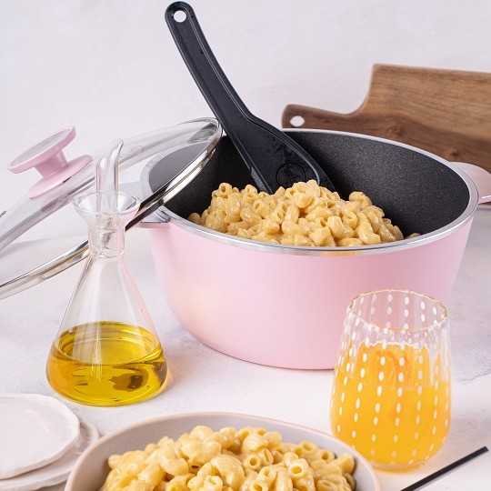

Exclusivo diseño! Optimiza la distribución del calor logrando una cocción pareja y un sellado crocante.
Esta bífera ha sido pensada para realizar cocciones para 4 comensales.
Está recubierta por antiadherente lo que facilita su limpieza y sus paredes laterales son más altas lo que minimiza el salpicado.
Su uso ideal es para la cocción de carnes, grillado de verduras, arrollados de queso, hamburguesas, brochetes, carnes blancas, etc.
Es una pieza fundamental en la cocina de todos los días y se complementa perfectamente con la sartén con mango de 24 cm y la cacerola con asas 24 cm
Envíos SIN CARGO a todo el país
En esta Sartén podrá realizar recetas para compartir con 4 o 5 comensales. En conjunto con la Cacerola con asas de 24 cm (diámetro) y la Bifera, son un equipo ideal para satisfacer las necesidades de la cocina de matrimonios jóvenes con hijos pequeños, ya que sus capacidades son óptimas para alimentar a una familia promedio de 4 integrantes. Podrá lucirse con la cocción de: tortas, tartas, carnes, pescados, verduras rellenas, salsas, etc.
Podés conseguirla también en AQUA y TERRA
Envíos SIN CARGO a todo el país
Estas Cacerolas con mango son ideales para preparaciones de platos pequeños en familias entre 2 y 3 integrantes o como complemento de piezas más grandes ya que en ellas se pueden realizar rellenos o salsas de forma práctica.
Poseen una pequeña base, paredes laterales altas y mango lo que facilita el manejo de las piezas.
Junto a la Sartén y la Cacerola de 24 cm, permiten resolver cocciones que van desde una entrada o un plato principal hasta un postre. Su uso es muy versátil ya que permite cocinar panes, tortas, carnes, cremas y salsas.
También vienen en las líneas AQUA y TERRA
Envíos SIN CARGO a todo el país
Son una excelente opción ya que se adaptan a una familia de entre 4 y 5 integrantes resolviendo absolutamente todas las posibilidades de preparaciones y cocciones tanto dulces como saladas: desde tortas a panes, carnes, cazuelas, guisados y sopas, etc.
Añadiendo complementos como el cestillo de freir, savarin o moldes de tortas, las opciones para cocinar son ilimitadas
Conseguílas también en la línea AQUA y TERRA
Envíos SIN CARGO a todo el país

Diámetro que permite realizar de forma rápida, fácil y sana, las preparaciones más variadas.
Pensada para familias de 1 o 2 adultos y hasta dos niños.
En conjunto con la Sartén de 20cm o la Cacerola de 18cm resultan aliados básicos para resolver las comidas de todos los días.
También la podés tener en la línea TERRA
Envíos SIN CARGO a todo el país
Estas sartenes son ideales para hogares de 1 o 2 personas. Son los elementos básicos para descubrir la cocina práctica, rica y saludable que permite Essen. En conjunto con la cacerola de 18 o 20cm, son ideales para resolver las comidas de todos los días.
Permiten la cocción de: Tortillas, omelettes, tortas, tartas, presas de pollo, pizzetas, pescados, verduras rellenas, salsas, etc.
Disponible también en la línea TERRA
Envíos SIN CARGO a todo el país
Pieza de amplio diámetro, ideal para familias numerosas de 5 o 6 personas. Es una cacerola ideal para la cocción de carnes rojas, guisos, tartas, presas de pollo, salsas, etc.
Como complemento tiene disponible el Savarín de 28cm en el que se puede cocinar flanes, budines, soufflés, etc.
También disponible en la línea TERRA
Envíos SIN CARGO a todo el país
Estas sartenes ofrecen un amplio volumen, permitiendo la realización de platos y cocciones para familias de entre 5 y 6 integrantes. El diseño facilita los desmoldes, las asas y el mango ayudan a manejar el producto con mayor seguridad durante las cocciones.
Se pueden realizar una amplia variedad de cocciones cómo tortillas, omelettes, tortas, pizzetas, pescados, verduras rellenas, salsas, etc.
Conseguíla también en la línea TERRA
Envíos SIN CARGO a todo el país
El diseño de la Fuente Rectangular permite distribuir uniformemente el calor por toda la superficie. Su forma hace que manipular los ingredientes durante la cocción sea mucho más fácil y seguro. La amplitud del producto es ideal para preparaciones de entre 4 y 6 comensales.
Facilita la cocción de canelones, lasagnas, carnes y los más ricos postres.
Envíos SIN CARGO a todo el país
Esta sartén tiene el tamaño ideal para realizar grandes porciones, sobre todo para recetas de tartas, tortillas, verduras rellenas y paellas. Su diseño facilita los desmoldes y las asas fijas ayudan a manejar el producto con mayor seguridad durante las cocciones.
Complementando esta sartén con la cacerola con asas de 24cm y la bifera con asas, tendrá la oportunidad de contar con piezas de cocina para preparaciones importantes de hasta 5 o 6 adultos.
Conseguíla también en la línea TERRA
Envíos SIN CARGO a todo el país
Diseño y estilo en un solo producto. Su capacidad se destaca ya que permite desarrollar cocciones para entre 6 y 8 comensales. Su forma cuadrada permite acomodar perfectamente porciones grandes de carne y guarniciones de forma muy sencilla. Además, por la amplitud de sus medidas facilita la manipulación de los ingredientes durante la cocción.
Incorporando las Budineras para cacerolas cuadradas, podrás preparar budines, terrinas, panes etc. de forma elegante, rica y fácil.
Conseguíla también en la línea TERRA
Envíos SIN CARGO a todo el país
Son una excelente opción ya que se adaptan a una familia de entre 4 y 5 integrantes resolviendo absolutamente todas las posibilidades de preparaciones y cocciones tanto dulces como saladas: desde tortas a panes, carnes, cazuelas, guisados y sopas, etc.
Añadiendo complementos como el cestillo de freir, savarin o moldes de tortas, las opciones para cocinar son ilimitadas
Conseguílas también en la línea MARSALA, AQUA y TERRA
Envíos SIN CARGO a todo el país
En esta Sartén podrá realizar recetas para compartir con 4 o 5 comensales. En conjunto con la Cacerola con asas de 24 cm (diámetro) y la Bifera, son un equipo ideal para satisfacer las necesidades de la cocina de matrimonios jóvenes con hijos pequeños, ya que sus capacidades son óptimas para alimentar a una familia promedio de 4 integrantes. Podrá lucirse con la cocción de: tortas, tartas, carnes, pescados, verduras rellenas, salsas, etc.
Podés conseguirla también en la línea MARSALA, AQUA y TERRA
Envíos SIN CARGO a todo el país
Es el complemento ideal para las Cacerolas Essen. Su diseño novedoso permite lograr cocciones más rápidas y presentaciones más atractivas. Perilla incorporada al cuerpo para garantizar que tengan la misma vida útil. Además, permite realizar preparaciones a baño maría sin agua. Viene en las medidas de 18cm, 24 cm y 28cm.
Envíos SIN CARGO a todo el país
Budineras para cacerola cuadrada de 28 y 30 Cm y para Set básico cuadrado de 30 Cm El conjunto es un novedoso y útil complemento que permite la preparación de tortas, budines salados y dulces, flanes y muchas otras recetas.
La original forma de las budineras, brindan a la cocción una estética única y facilita el corte en porciones gracias a las marcas que generan los gajos en sus paredes laterales. Los recubrimientos son antiadherentes lo que permite cocinar con una mínima lubricación ya que los alimentos no se pegan y limpiar es muy fácil.
Envíos SIN CARGO a todo el país
El Vaporizador Essen es un fabuloso complemento para quienes gustan de las comidas saludables y nutritivas. Este increíble complemento permite convertir una pieza Essen en una práctica vaporiera.
Puede ser utilizado tanto en Sartenes como en Cacerolas Essen de 24 cm, 25 cm y 26 cm de diámetro.
Presenta un recubrimiento antiadherente tanto en el interior como en el exterior, lo que le da una gran terminación y facilita su limpieza. El Vaporizador posee una gran capacidad y un sólido diseño. Su tamaño es ideal para cocciones abundantes.
La tapa del Vaporizador Essen posee múltiples funciones: tapar durante la cocción, ser utilizada como bandeja para los alimentos ya cocidos o como base escurridora del Vaporizador.
Los divisores encastrables brindan la posibilidad de obtener 2 o 4 espacios de cocción, permitiendo cocinar distintos ali ¬mentos de forma separada son que se mezclen sus sabores
Envíos SIN CARGO a todo el país
Cestillo freidor para cacerolas de 24cm en adelante.
Envíos SIN CARGO a todo el país
Pieza de diseño vanguardista en el territorio de los grills y biferas, con gran capacidad de cocción gracias a su superficie longilínea cubriendo dos hornallas de la cocina.
Destaca por su concepción funcional y práctica. En ella las asas se integran a la morfología de la pieza. Las paredes laterales verticales protegen del salpicado durante la cocción y a la vez guían los jugos cuando se desea retirarlos de la pieza.
En la zona de cocción los bastones confieren el típico sello del grillado. Todo el conjunto se caracteriza por una curvatura transversal que permite a los jugos de cocción desplazarse hacia las canaletas laterales logrando grillados más sanos.
Sus medidas son de 49cm por 27cm, y sirve hasta para 6 comensales
Envíos SIN CARGO a todo el país
Este producto gracias a su multifuncionalidad permite preparar una gran cantidad de recetas como grillados de carnes blancas, rojas y verduras, tartas, tortas, masitas, panqueques, masas, tortillas, tostados y todas las recetas que te imagines exceptuando aquellas que son líquidas o poseen un alto porcentaje de líquido en la preparación
Se puede usar de ambos lados simplemente girándola con el mango sobre la cocina.
Podés conseguirla también en la línea TERRA
Envíos SIN CARGO a todo el país
Conseguílo también en la línea TERRA
Envíos SIN CARGO a todo el país
Envíos SIN CARGO a todo el país
Mecanismo de molienda cerámico - Posibilidad de regular el grosor - 3 recipientes herméticos intercambiables - Posibilidad de preparar la mezcla de especias favorita
Envíos SIN CARGO a todo el país
Tapa de silicona con cierre hermético para evitar el ingreso de humedad
Envíos SIN CARGO a todo el país
Contenedor multipropósito de la cocina. Útil para preparar, contener o servir alimentos.
Capacidad 400 ml
Envíos SIN CARGO a todo el país
Secá tus verduras solo con girar la palanca. El contenedor plástico permite visualizar el agua centrifugada. Con base de silicona para asegurar buena adherencia con la mesada.
Envíos SIN CARGO a todo el país
Permite picar gran variedad de hierbas, verduras y frutas.
Envíos SIN CARGO a todo el país
La presentación del Set en tres diferentes volúmenes lo hace adaptable a todas las necesidades de la cocina. Poseen un asa de acero recubierta de silicona para facilitar el agarre.
La base de los mismos cuenta con recubrimiento de silicona para favorecer apoyo cuando se necesita batir o mezclar con intensidad. Su pico vertedor ayuda a volcar mezclas líquidas. Sus bordes son redondeados y suaves al tacto, lo que facilita su limpieza.